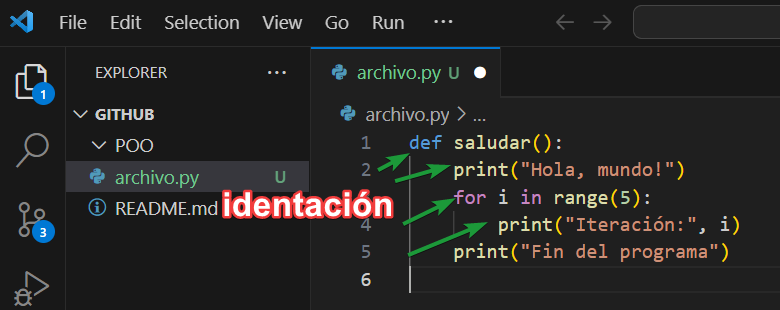
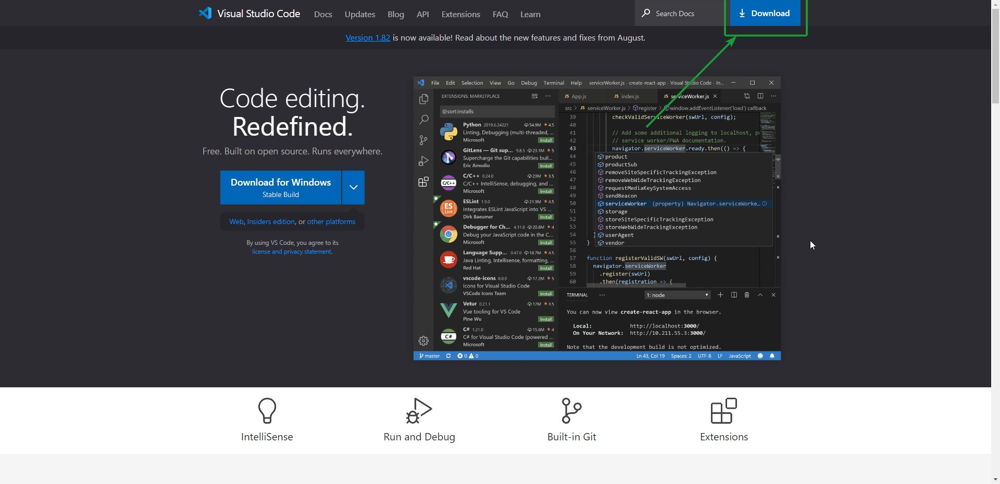
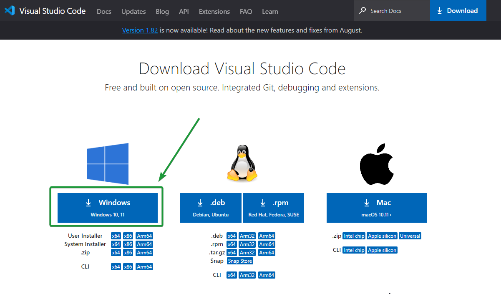
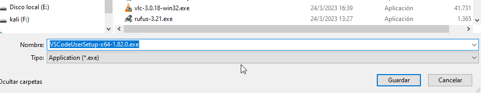
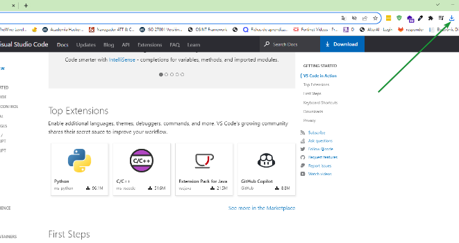
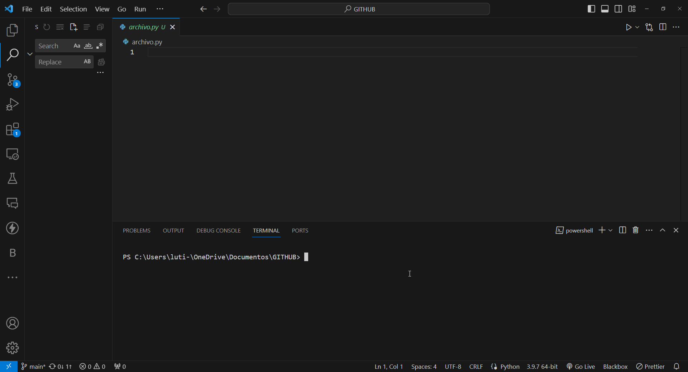

2 ENTORNO DE DESARROLLO.
Un entorno de desarrollo, comúnmente conocido como IDE por sus siglas en inglés (Integrated Development Environment), es una herramienta de software integral que se utiliza para facilitar la programación y el desarrollo de software. Un IDE proporciona un conjunto de características y herramientas que ayudan a los programadores a escribir, depurar, compilar y administrar código de manera más eficiente, en otras palabras es un paquete de software que combina todas las herramientas de desarrollo en una única interfaz gráfica de usuario (GUI), Algunos ejemplos de IDE más utilizados son NetBeans, Microsoft Visual Studio, Adobe Flex Builder y Eclipse.
Algunos componentes comunes de un entorno de desarrollo incluyen:
Editor de código: Ofrece funciones de edición de texto avanzadas, como resaltado de sintaxis, autoindentación y autocompletado, lo que facilita la escritura de código.
La Identación se refiere al formato visual utilizado para estructurar y organizar el código fuente en un lenguaje de programación.

Depurador: Permite a los programadores identificar y corregir errores en su código al proporcionar herramientas para establecer puntos de interrupción, inspeccionar variables y seguir la ejecución del programa paso a paso.
Compilador/Intérprete: Proporciona la capacidad de compilar y ejecutar el código directamente desde el IDE. Algunos IDE también son específicos para un lenguaje y pueden incluir un intérprete para ejecutar el código directamente.
Gestión de proyectos: Permite organizar y administrar proyectos de desarrollo, lo que incluye la creación, apertura y gestión de archivos y directorios.
Herramientas de versionado: Puede integrar sistemas de control de versiones, como Git, para realizar un seguimiento de los cambios en el código y colaborar con otros desarrolladores.
Asistencia en el desarrollo: Ofrece sugerencias y advertencias en tiempo real mientras se escribe código, lo que ayuda a detectar posibles errores y mejorar la calidad del código.
Herramientas de construcción: Facilita la construcción y automatización de tareas, como la compilación, la generación de documentación y la ejecución de pruebas.
Herramientas de depuración visual: Algunos IDE proporcionan una interfaz gráfica para depurar aplicaciones de manera más visual, lo que puede incluir representaciones gráficas de estructuras de datos y flujos de programa.
Integración con SDK y bibliotecas: Puede integrar SDK (kits de desarrollo de software) y bibliotecas relevantes para el lenguaje o plataforma de desarrollo específico.
Finalización de código: conocida como prompt de código, esta función se utiliza para analizar todo el código y para identificar e insertar los componentes de código que faltan. Su uso permite ahorrar tiempo y minimizar los fallos o errores
Por ejemplo, un SDK de Android proporciona las herramientas y recursos necesarios para desarrollar aplicaciones para dispositivos Android, incluyendo bibliotecas para interactuar con el hardware y el sistema operativo, herramientas de depuración, un emulador de Android para probar aplicaciones y documentación detallada.
Los IDE varían según el lenguaje de programación y la plataforma de desarrollo. Ejemplos populares de IDE incluyen Visual Studio (para desarrollo en C# y .NET), Eclipse (para Java), IntelliJ IDEA (para Java y otros lenguajes), PyCharm (para Python) y muchos otros. La elección de un IDE suele depender de las preferencias del desarrollador y del entorno de desarrollo específico en el que trabaje.
CARACTERISTICAS E INTSALACIÓN.
Para este curso se utilizará los lenguajes de programación de Python y Java, por lo que instalaremos dos entornos virtuales, para sacar el mayor provecho en el caso del lenguaje de programación Java.
El primer entorno virtual será Visual Studio Code y el IDE para el lenguaje de programación será Netbeans IDE 16  .
.
Para la instalación del IDE Visual Studio Code hay que seguir los siguientes pasos.
Paso 1: Descarga de VS Code
Dirígete al sitio web oficial de Visual Studio Code en https://code.visualstudio.com/ y busca un botón de descarga, generalmente ubicado en la página principal. Aquí deberías encontrar una imagen que representa el botón de descarga.

Paso 2: Selecciona tu Sistema Operativo, en mi caso Windows 10.
Paso 3: Descarga del Instalador
Después de seleccionar tu sistema operativo, deberías ser redirigido a una página que te permitirá descargar el instalador específico para tu plataforma. Aquí encontrarás un enlace de descarga o un botón para iniciar la descarga, donde señalarás la carpeta y realizará la descarga.
Paso 4: Ejecuta el Instalador
Una vez que se complete la descarga, ejecuta el instalador haciendo doble clic en él (en Windows) o siguiendo las instrucciones específicas para tu sistema operativo.
Durante la instalación, se te pueden presentar opciones de configuración. Estas opciones pueden variar según la versión y la plataforma. Generalmente, se te preguntará si deseas crear accesos directos en el escritorio o en el menú de inicio (en el caso de Windows), así como otras preferencias.
Paso 5: Finaliza la Instalación
Finalmente, cuando se complete la instalación, verás una pantalla que confirma que Visual Studio Code se ha instalado correctamente.

Paso 6: Configuración de los lenguajes.
La configuración de los lenguajes es muy importante ya que este nos permite al momento de ejecutar los archivos con sus diferentes extensiones que corran de manera correcta, para este curso instalaremos Python y luego netbeans por lo que los pasos a seguir son los siguientes:
Paso 1: Descargar Python: Ve al sitio web oficial de Python en https://www.python.org/downloads/.
En la página de descargas, verás las últimas versiones de Python disponibles. Elige la versión más reciente de Python 3 (por ejemplo, Python 3.9.6).
Desplázate hacia abajo hasta encontrar la sección de descargas de archivos ejecutables. Dependiendo de tu sistema operativo (Windows, macOS o Linux), selecciona el enlace de descarga adecuado. Para Windows, es posible que veas dos opciones: una para 32 bits y otra para 64 bits. Si tienes un sistema operativo de 64 bits, selecciona la versión de 64 bits.
Paso 2: Ejecutar el Instalador de Python: Una vez que se complete la descarga, haz doble clic en el archivo ejecutable que descargaste para iniciar el instalador de Python.
Asegúrate de marcar la casilla que dice “Add Python X.Y to PATH” (donde “X.Y” representa la versión de Python que estás instalando). Esto añadirá Python al PATH de tu sistema, lo que facilitará su uso desde la línea de comandos.
Haz clic en “Install Now” para comenzar la instalación.
Paso 3: Verificar la Instalación de Python: Abre una terminal o línea de comandos, Escribe el siguiente comando y presiona Enter:
bash
Copy code
python –version
Esto mostrará la versión de Python que has instalado, como “Python 3.9.6” o similar.
Instalación del Netbeans.